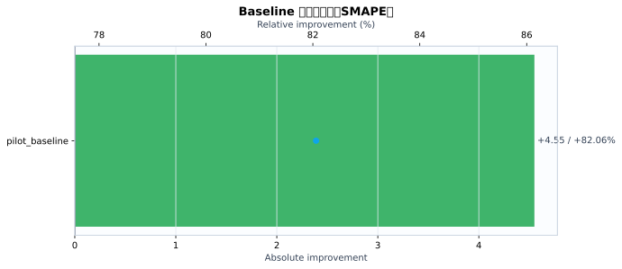
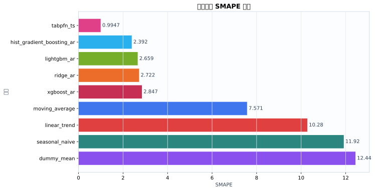
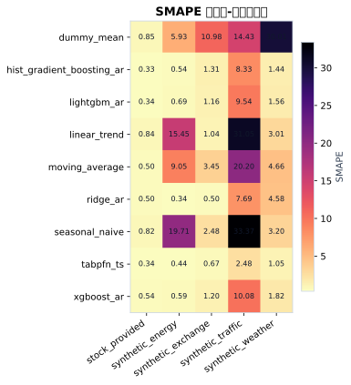
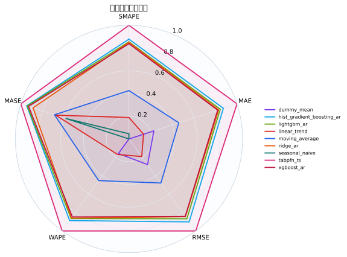
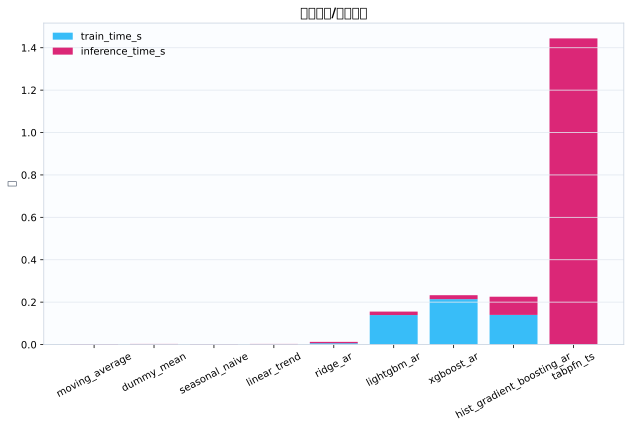
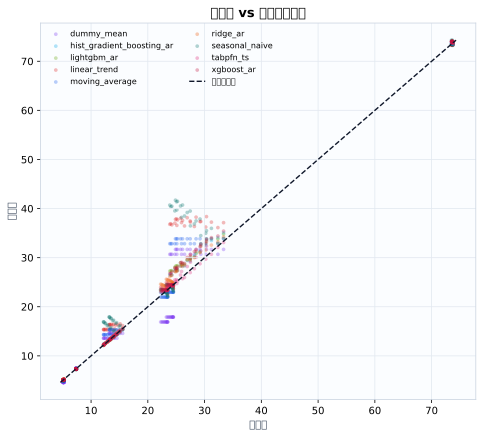
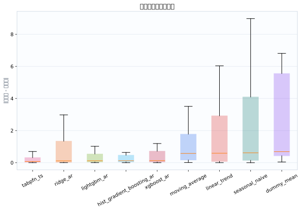

数据集5
模型9
指标行数45
预测行数1080
结论摘要
- 主指标 SMAPE 下，当前 run 的最佳模型是 tabpfn_ts，平均值为 0.9947。
- 相对 baseline pilot_baseline，当前最佳模型在 SMAPE 上提升 82.06% （absolute=+4.55）。
核心指标卡片
SMAPE
0.9947
最佳模型: tabpfn_ts
GPU_MEMORY_MB
0
最佳模型: dummy_mean
INFERENCE_TIME_S
0.002403
最佳模型: moving_average
MAE
0.2338
最佳模型: tabpfn_ts
MASE
0.5332
最佳模型: tabpfn_ts
MSE
0.1961
最佳模型: tabpfn_ts
RMSE
0.3096
最佳模型: tabpfn_ts
TRAIN_TIME_S
0
最佳模型: tabpfn_ts
Baseline 对比
| baseline | metric | current_model | current_value | baseline_model | baseline_value | absolute_difference | relative_improvement_pct |
|---|---|---|---|---|---|---|---|
| pilot_baseline | smape | tabpfn_ts | 0.9947 | ridge_ar | 5.545 | 4.55 | 82.06 |
动态交互图表
指标排名动态图
残差直方图
效率-精度散点图
数据集排名轨迹
Matplotlib 可视化图表
Baseline 改变量图
{kind=link}

Baseline/模型平均指标柱状图
{kind=link}

数据集-模型热力图
{kind=link}

多指标雷达图
{kind=link}

运行时间图
{kind=link}

真实值-预测值散点图
{kind=link}

残差箱线图
{kind=link}

训练过程曲线
N/A：当前 run 目录未发现 loss/accuracy/TensorBoard/wandb 训练曲线文件。
错误分析与样本分析
当前支持预测任务的残差与真实-预测散点分析；分类 confusion matrix / ROC / PR 曲线需要真实分类输出后自动启用。
原始 Metrics
| run_id | model | dataset | domain | horizon | context_length | mse | mae | rmse | smape | wape | mase | train_time_s | inference_time_s | gpu_memory_mb |
|---|---|---|---|---|---|---|---|---|---|---|---|---|---|---|
| tabpfn_ts_20260528_112935 | dummy_mean | synthetic_energy | energy | 12 | 96 | 0.8464 | 0.8118 | 0.92 | 5.935 | 5.974 | 1.85 | 0.0004119 | 0.002711 | 0 |
| tabpfn_ts_20260528_112935 | seasonal_naive | synthetic_energy | energy | 12 | 96 | 11.04 | 2.965 | 3.322 | 19.71 | 21.82 | 6.756 | 0.0002836 | 0.002349 | 0 |
| tabpfn_ts_20260528_112935 | moving_average | synthetic_energy | energy | 12 | 96 | 2.088 | 1.264 | 1.445 | 9.052 | 9.303 | 2.881 | 0.0002662 | 0.002365 | 0 |
| tabpfn_ts_20260528_112935 | linear_trend | synthetic_energy | energy | 12 | 96 | 5.705 | 2.25 | 2.389 | 15.45 | 16.56 | 5.128 | 0.0002633 | 0.002687 | 0 |
| tabpfn_ts_20260528_112935 | ridge_ar | synthetic_energy | energy | 12 | 96 | 0.003831 | 0.04674 | 0.0619 | 0.3399 | 0.344 | 0.1065 | 0.00668 | 0.006285 | 0 |
| tabpfn_ts_20260528_112935 | hist_gradient_boosting_ar | synthetic_energy | energy | 12 | 96 | 0.00736 | 0.07232 | 0.08579 | 0.5401 | 0.5322 | 0.1648 | 0.1853 | 0.08985 | 0 |
| tabpfn_ts_20260528_112935 | lightgbm_ar | synthetic_energy | energy | 12 | 96 | 0.01312 | 0.09498 | 0.1146 | 0.6895 | 0.699 | 0.2164 | 0.1554 | 0.01687 | 0 |
| tabpfn_ts_20260528_112935 | xgboost_ar | synthetic_energy | energy | 12 | 96 | 0.01183 | 0.08186 | 0.1088 | 0.5938 | 0.6025 | 0.1866 | 0.3198 | 0.01831 | 0 |
| tabpfn_ts_20260528_112935 | tabpfn_ts | synthetic_energy | energy | 12 | 96 | 0.004674 | 0.05811 | 0.06836 | 0.4372 | 0.4277 | 0.1324 | 0 | 2.267 | 0 |
| tabpfn_ts_20260528_112935 | dummy_mean | synthetic_traffic | traffic | 12 | 96 | 21.6 | 4.123 | 4.647 | 14.43 | 15.08 | 2.974 | 0.0004457 | 0.002384 | 0 |
| tabpfn_ts_20260528_112935 | seasonal_naive | synthetic_traffic | traffic | 12 | 96 | 145.5 | 10.93 | 12.06 | 33.37 | 40 | 7.887 | 0.0004068 | 0.002421 | 0 |
| tabpfn_ts_20260528_112935 | moving_average | synthetic_traffic | traffic | 12 | 96 | 42.87 | 6.005 | 6.548 | 20.2 | 21.97 | 4.332 | 0.0002817 | 0.002456 | 0 |
| tabpfn_ts_20260528_112935 | linear_trend | synthetic_traffic | traffic | 12 | 96 | 105.9 | 9.907 | 10.29 | 31.05 | 36.24 | 7.146 | 0.0002916 | 0.002701 | 0 |
| tabpfn_ts_20260528_112935 | ridge_ar | synthetic_traffic | traffic | 12 | 96 | 4.951 | 2.149 | 2.225 | 7.694 | 7.862 | 1.55 | 0.006591 | 0.006385 | 0 |
| tabpfn_ts_20260528_112935 | hist_gradient_boosting_ar | synthetic_traffic | traffic | 12 | 96 | 5.657 | 2.351 | 2.378 | 8.332 | 8.6 | 1.696 | 0.1322 | 0.09149 | 0 |
| tabpfn_ts_20260528_112935 | lightgbm_ar | synthetic_traffic | traffic | 12 | 96 | 7.596 | 2.688 | 2.756 | 9.536 | 9.835 | 1.939 | 0.1403 | 0.01842 | 0 |
| tabpfn_ts_20260528_112935 | xgboost_ar | synthetic_traffic | traffic | 12 | 96 | 8.368 | 2.871 | 2.893 | 10.08 | 10.5 | 2.071 | 0.1869 | 0.0192 | 0 |
| tabpfn_ts_20260528_112935 | tabpfn_ts | synthetic_traffic | traffic | 12 | 96 | 0.8218 | 0.6971 | 0.9065 | 2.476 | 2.55 | 0.5028 | 0 | 1.234 | 0 |
| tabpfn_ts_20260528_112935 | dummy_mean | synthetic_weather | weather | 12 | 96 | 37.89 | 6.142 | 6.155 | 30.01 | 26.09 | 30 | 0.0003615 | 0.002293 | 0 |
| tabpfn_ts_20260528_112935 | seasonal_naive | synthetic_weather | weather | 12 | 96 | 0.7422 | 0.7493 | 0.8615 | 3.199 | 3.183 | 3.66 | 0.0002869 | 0.002442 | 0 |
| tabpfn_ts_20260528_112935 | moving_average | synthetic_weather | weather | 12 | 96 | 1.325 | 1.076 | 1.151 | 4.664 | 4.57 | 5.256 | 0.0002654 | 0.002366 | 0 |
| tabpfn_ts_20260528_112935 | linear_trend | synthetic_weather | weather | 12 | 96 | 0.7238 | 0.7104 | 0.8507 | 3.006 | 3.018 | 3.47 | 0.000262 | 0.002568 | 0 |
| tabpfn_ts_20260528_112935 | ridge_ar | synthetic_weather | weather | 12 | 96 | 1.698 | 1.1 | 1.303 | 4.576 | 4.674 | 5.375 | 0.006132 | 0.006226 | 0 |
| tabpfn_ts_20260528_112935 | hist_gradient_boosting_ar | synthetic_weather | weather | 12 | 96 | 0.1414 | 0.3382 | 0.3761 | 1.441 | 1.437 | 1.652 | 0.1337 | 0.08903 | 0 |
| tabpfn_ts_20260528_112935 | lightgbm_ar | synthetic_weather | weather | 12 | 96 | 0.2287 | 0.3673 | 0.4783 | 1.564 | 1.56 | 1.795 | 0.1354 | 0.01636 | 0 |
| tabpfn_ts_20260528_112935 | xgboost_ar | synthetic_weather | weather | 12 | 96 | 0.3408 | 0.429 | 0.5838 | 1.822 | 1.822 | 2.096 | 0.1848 | 0.0192 | 0 |
| tabpfn_ts_20260528_112935 | tabpfn_ts | synthetic_weather | weather | 12 | 96 | 0.1124 | 0.2457 | 0.3352 | 1.051 | 1.044 | 1.2 | 0 | 1.132 | 0 |
| tabpfn_ts_20260528_112935 | dummy_mean | synthetic_exchange | economics | 12 | 96 | 0.2906 | 0.536 | 0.539 | 10.98 | 10.42 | 12.24 | 0.0003897 | 0.002339 | 0 |
| tabpfn_ts_20260528_112935 | seasonal_naive | synthetic_exchange | economics | 12 | 96 | 0.02396 | 0.1259 | 0.1548 | 2.48 | 2.447 | 2.874 | 0.0002873 | 0.00248 | 0 |
| tabpfn_ts_20260528_112935 | moving_average | synthetic_exchange | economics | 12 | 96 | 0.03386 | 0.1748 | 0.184 | 3.45 | 3.397 | 3.991 | 0.0002628 | 0.002419 | 0 |
| tabpfn_ts_20260528_112935 | linear_trend | synthetic_exchange | economics | 12 | 96 | 0.00343 | 0.05348 | 0.05857 | 1.039 | 1.04 | 1.221 | 0.000261 | 0.002606 | 0 |
| tabpfn_ts_20260528_112935 | ridge_ar | synthetic_exchange | economics | 12 | 96 | 0.0009187 | 0.02576 | 0.03031 | 0.5004 | 0.5007 | 0.5881 | 0.006344 | 0.006242 | 0 |
| tabpfn_ts_20260528_112935 | hist_gradient_boosting_ar | synthetic_exchange | economics | 12 | 96 | 0.006484 | 0.06727 | 0.08052 | 1.31 | 1.307 | 1.536 | 0.1187 | 0.07155 | 0 |
| tabpfn_ts_20260528_112935 | lightgbm_ar | synthetic_exchange | economics | 12 | 96 | 0.004963 | 0.05978 | 0.07045 | 1.163 | 1.162 | 1.365 | 0.1267 | 0.01383 | 0 |
| tabpfn_ts_20260528_112935 | xgboost_ar | synthetic_exchange | economics | 12 | 96 | 0.00581 | 0.06162 | 0.07622 | 1.199 | 1.198 | 1.407 | 0.1999 | 0.01718 | 0 |
| tabpfn_ts_20260528_112935 | tabpfn_ts | synthetic_exchange | economics | 12 | 96 | 0.001421 | 0.03437 | 0.0377 | 0.6683 | 0.668 | 0.7847 | 0 | 1.126 | 0 |
| tabpfn_ts_20260528_112935 | dummy_mean | stock_provided | finance | 12 | 96 | 0.04846 | 0.1899 | 0.2201 | 0.8502 | 0.4691 | 0.06473 | 0.0004045 | 0.002493 | 0 |
| tabpfn_ts_20260528_112935 | seasonal_naive | stock_provided | finance | 12 | 96 | 0.09722 | 0.2158 | 0.3118 | 0.8207 | 0.533 | 0.07355 | 0.0002822 | 0.002527 | 0 |
| tabpfn_ts_20260528_112935 | moving_average | stock_provided | finance | 12 | 96 | 0.01478 | 0.09729 | 0.1216 | 0.495 | 0.2403 | 0.03316 | 0.0002761 | 0.002411 | 0 |
| tabpfn_ts_20260528_112935 | linear_trend | stock_provided | finance | 12 | 96 | 0.05156 | 0.1952 | 0.2271 | 0.8403 | 0.4821 | 0.06654 | 0.0002801 | 0.002603 | 0 |
| tabpfn_ts_20260528_112935 | ridge_ar | stock_provided | finance | 12 | 96 | 0.07547 | 0.1902 | 0.2747 | 0.4973 | 0.4697 | 0.06483 | 0.006294 | 0.006273 | 0 |
| tabpfn_ts_20260528_112935 | hist_gradient_boosting_ar | stock_provided | finance | 12 | 96 | 0.01456 | 0.08421 | 0.1207 | 0.3342 | 0.2079 | 0.0287 | 0.1296 | 0.08698 | 0 |
| tabpfn_ts_20260528_112935 | lightgbm_ar | stock_provided | finance | 12 | 96 | 0.01889 | 0.09856 | 0.1375 | 0.3427 | 0.2434 | 0.03359 | 0.1377 | 0.01667 | 0 |
| tabpfn_ts_20260528_112935 | xgboost_ar | stock_provided | finance | 12 | 96 | 0.07738 | 0.2036 | 0.2782 | 0.5401 | 0.5027 | 0.06938 | 0.1798 | 0.01906 | 0 |
| tabpfn_ts_20260528_112935 | tabpfn_ts | stock_provided | finance | 12 | 96 | 0.04005 | 0.1338 | 0.2001 | 0.3417 | 0.3305 | 0.04561 | 0 | 1.46 | 0 |
配置参数
展开/折叠配置
{
"/home/wanyi/zy_test/tabpfn-ts-benchmark/configs/config.yaml": {
"defaults": [
{
"dataset": "etth1"
},
{
"model": "seasonal_naive"
},
{
"experiment": "e1_zeroshot"
},
"_self_"
],
"seed": 42,
"output_dir": "results",
"wandb": {
"project": "tabpfn-quant",
"mode": "offline",
"entity": null
},
"hydra": {
"run": {
"dir": "outputs/${now:%Y-%m-%d}/${now:%H-%M-%S}"
}
}
}
}运行环境
{
"python": "3.10.12",
"platform": "Linux-6.8.0-111-generic-x86_64-with-glibc2.35",
"git_head": "N/A",
"git_dirty": false
}Warnings
- 无
产物链接
- metrics.json
- summary.csv
- 源 run 目录: /home/wanyi/zy_test/tabpfn-ts-benchmark/results/full_benchmark_v1_c96_h12_s2
- 主指标: smape